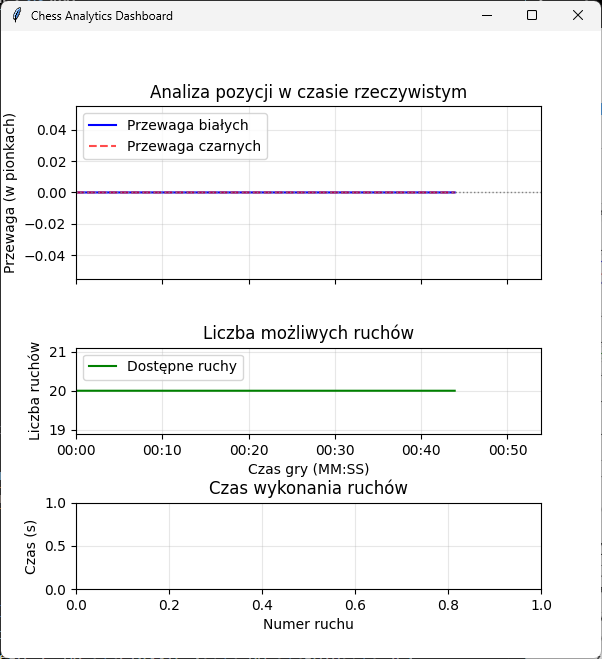

Wybór tej opcji spowoduje otworzenie się nowych okien podczas gry:
oraz
W oknie ustawień można:
- Zmienić głośność muzyki
- Ustawić odpowiednią roździelczość ekranu gry
- Wybrać zestaw figur (z czego 5, od classic_2 do gold jest wykonanych przeze mnie). Aby skorzystać z własnego zestawu należy umieścić figury w folderze custom i nazwać je zgodnie z plikem readme.txt znajdującym się w środku
- Włączyć podświetlanie ruchów figur przeciwnika (po kliknięciu na figurę przeciwnika podświetlone zostają pola, na które może się ona ruszyć)
- Włączyć widok dla nerdów
Aby zapisać ustawienia należy użyć przycisku Zapisz i zastosuj.
Program na chwilę się zamknie, po czym automatycznie otworzy w celu aplikowania nowych ustawień.